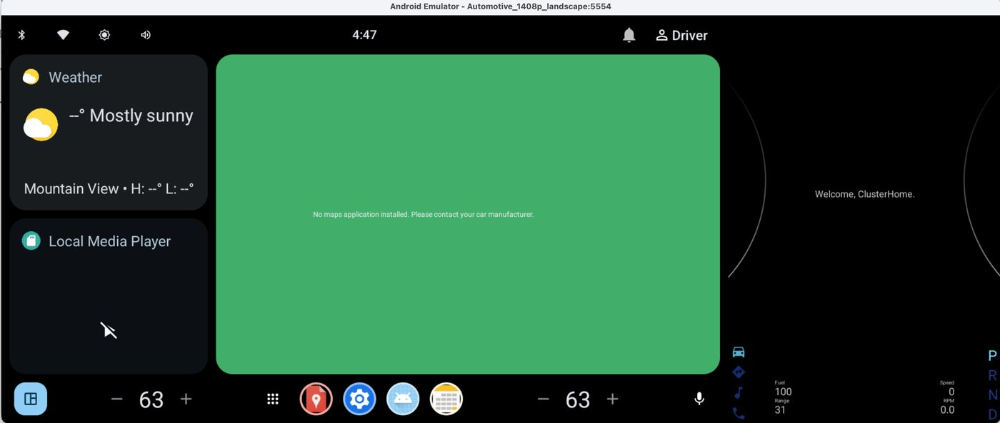

Goal for the session: get a virtual Android Automotive vehicle running on my Mac, then read and write vehicle data myself instead of just watching the screen.

The slider and my terminal commands both wrote into the VHAL. CarService passed each change on to the cluster app.
$ adb shell dumpsys \ android.hardware.automotive.vehicle.IVehicle/default \ --get PERF_VEHICLE_SPEED VehiclePropValue{prop: 291504647, status: AVAILABLE, value: RawPropValues{floatValues: [39.166668]}}
39.17 metres per second, or 141 km/h, matching the slider.
$ adb shell dumpsys \ android.hardware.automotive.vehicle.IVehicle/default \ --set PERF_VEHICLE_SPEED -f 25
The cluster jumped to 56: 25 m/s is 90 km/h, shown in mph.
| Digits | Meaning |
|---|---|
1 | Defined by Google, a standard value |
1 | Applies to the whole vehicle |
60 | Stored as a decimal number |
0207 | Which value: vehicle speed |
My own motorcycle values will start with 2, meaning defined by me rather than Google.
Values flow through the VHAL and CarService, which enforce permissions and update rates. Motorcycle data has to enter at the VHAL, not be patched into the app.
The VHAL holds speed in metres per second, while the cluster showed miles per hour because the emulator is set up as a US vehicle. Data and presentation are separate concerns.
When the slider and the terminal both sent a speed, the VHAL kept whichever came last, and the slider never noticed. On the bike, exactly one source must own each value, or the screen can show a wrong number without warning.
A property ID packs who defined it, what it applies to, its data type and what it is. Designing those IDs for RPM, gear and coolant temperature is one of my next deliverables.
Build my own app and make it read vehicle data through the platform, instead of reading the vehicle layer directly from a terminal.